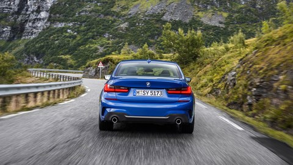
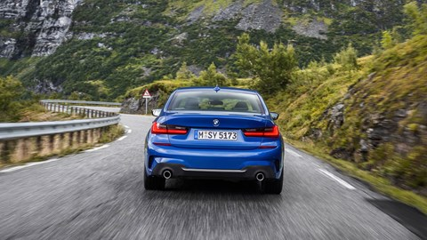

BMW 3 SERIES SALOON | G20
FIND YOUR NEXT CAR AT AUTO4SALE GARAGE AT GLENVISTA
As you’d expect, with the Bavarians are keen not to upset the design apple cart; it’s instantly identifiable as a 3-series, and although the styling needed to move on, as insiders have repeatedly admitted, it’s pretty much business as usual.
What helps in this department is the highly flexible new architecture known as CLAR - short for Munich’s ‘Cluster Architecture,’ which now forms the backbone of all future rear-wheel drive BMWs. There have been some notable tweaks to the 3-Series’ dimensions – new car is 85mm longer (4709mm), 16mm wider (1827mm) and all-but identical in terms of height.
The most notable change is that the wheelbase has grown by 41mm (to 2851mm), which should benefit the rear legroom – traditionally a 3-series weakness. These tweaks don’t make a massive difference, but subtly sportify the car’s overall stance.
The new 3-series also gets a widened track front and rear track, while increased body torsional rigidity (up by 25%) and uprated suspension mountings are all bound to improve dynamics. Most importantly, the new 3-series is up to 55kg less than its predecessor. Aerodynamics are massively improved, too, with the drag coefficient falling from 0.26 to a Mercedes-Benz-rivalling 0.23. So, expect tighter handling, a higher maximum speed and more efficient motorway cruising.

 
